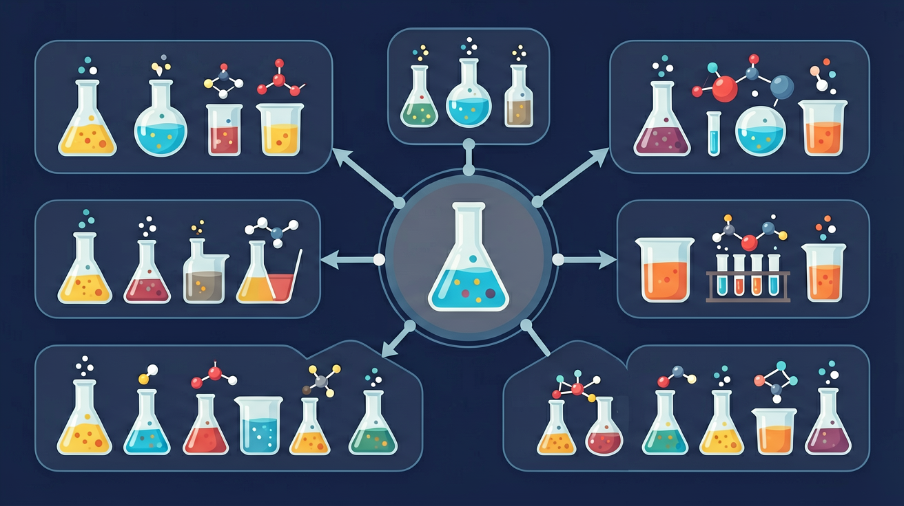

真实情境
实验室配制生理盐水
学校实验室需要配制500 mL 0.9%的生理盐水用于生物实验。实验室有分析天平、容量瓶、烧杯等仪器，以及纯净水和氯化钠固体。实验员发现，配制过程中需要精确称量和溶解，才能确保溶液浓度准确。
已有经验
学生已经学习过溶液的组成、质量分数的计算，了解天平的使用方法
真正卡点
如何将质量分数转化为物质的量浓度，以及配制过程中的操作要点
本课任务
计算所需氯化钠的质量，设计配制步骤，说明注意事项
实验室怎样把“称多少、加多少水”转化成准确的 mol/L 浓度？

先选一个你关心的问题。后面的例子、提示和 AI 学伴都会围绕这个问题来帮你推进。
选择或输入后，本课会围绕你的问题展开。
学校实验室需要配制500 mL 0.9%的生理盐水用于生物实验。实验室有分析天平、容量瓶、烧杯等仪器，以及纯净水和氯化钠固体。实验员发现，配制过程中需要精确称量和溶解，才能确保溶液浓度准确。
学生已经学习过溶液的组成、质量分数的计算，了解天平的使用方法
如何将质量分数转化为物质的量浓度，以及配制过程中的操作要点
计算所需氯化钠的质量，设计配制步骤，说明注意事项
0.2 mol 溶质配成 1.0 L 溶液，浓度是多少？
c=n/V，单位常为 mol·L⁻¹。V 必须是溶液体积，不是溶剂体积。稀释定律：稀释前后溶质物质的量不变，c₁V₁=c₂V₂（对不发生化学反应的稀释）。配制时在容量瓶中定容到刻度，读数与温度影响体积。
稀释时保持不变的是？
质量分数 w=m溶质/m溶液。若已知密度 ρ，则 c=1000ρω/M（注意单位：ρ 常 g·cm⁻³，M 为 g·mol⁻¹）。换算时先求 1 L 溶液中溶质质量，再除以摩尔质量得 n，从而得 c。单位与密度是最常见丢分点。
计算物质的量浓度时，体积应取？
容量瓶定容时仰视会使溶液体积偏大、浓度偏小；称量溶质偏少也会使浓度偏小。转移时未洗涤烧杯会导致溶质损失、浓度偏小。定容后摇匀前勿颠倒读数。分析误差先判断 n 或 V 哪个被改变。
配制溶液时定容仰视，浓度通常？
本课任务：在摩尔浓度模拟中分别改变溶质的量与溶液体积，记录 c 的变化，并完成一组稀释前后的 cV 守恒计算。
写清自变量、因变量和至少两个保持不变的条件，避免同时改变多个因素后无法归因。
至少记录三组带单位的数据或三个可复查的现象，不用“变大了”“更明显”代替证据。
用本课公式、粒子模型或受力关系解释趋势，并指出结论成立所依赖的模型条件。
换一个参数或真实情境预测结果，再用仿真检验；若不一致，回查变量、单位和边界条件。
物质的量浓度 c 表示单位体积溶液中所含溶质 B 的物质的量：cB = nB / V。
常用单位 mol/L。计算时体积 V 必须用 L，不是 mL。
稀释过程中溶质物质的量不变，所以 c₁V₁ = c₂V₂。
物质的量浓度 c=n/V，单位 mol·L⁻¹，V 是溶液体积不是溶剂体积。配制一定物质的量浓度溶液常用容量瓶：计算→称量/量取→溶解→转移→洗涤→定容→摇匀。稀释定律：稀释前后溶质的物质的量不变，c₁V₁=c₂V₂。
定容时凹液面最低处与刻度线相切，眼睛平视。洗涤烧杯玻璃棒 2–3 次并转入容量瓶。稀释浓硫酸等要将浓酸注入水中。计算时体积单位统一为升。
常见误区：常见误区是把溶剂体积当成溶液体积，或定容时仰视俯视导致浓度偏差。定容必须平视刻度线。
物质的量浓度公式中的 V 指？
记忆锚点：浓度口诀：先求 n，再看 V；mL 先换 L，定容看总量。
易错提醒：常见错误：把 250 mL 直接代入 250 L，导致浓度小 1000 倍；或把“加入水的体积”当成“溶液总体积”。
理解物质的量浓度的概念及计算方法，掌握配制一定物质的量浓度溶液的标准操作步骤，培养定量分析能力
配制100mL 0.1mol/L NaCl溶液：需称取0.584g NaCl溶解后转移至100mL容量瓶，用胶头滴管定容至刻度线，溶液凹液面与刻度线相平
计算溶质质量→称量→溶解冷却→玻璃棒引流转移→洗涤烧杯2-3次→定容时先距刻度线1-2cm改用胶头滴管→上下颠倒摇匀8-10次
常见错误包括：未冷却直接转移导致体积偏小，定容时仰视读数导致浓度偏低，忘记洗涤烧杯使溶质损失
课堂任务：请用“现象/文本/地图/实验数据 → 关键证据 → 学科解释 → 迁移应用”四步，重写一个关于「物质的量浓度：怎样配出准确浓度的溶液？」的新问题。
不要只看结论。动手改变变量后，再用一句话解释画面为什么变了。
拖动浓度、体积或溶质参数，观察颜色深浅和浓度变化。注意：仿真负责“看见变量”，计算仍要回到本课公式。
识别并写出本节核心定义、公式或分类标准。
把本课标准用于一个实验数据或真实生活场景。
设计一个反例，说明常见错误为什么站不住脚。
如果你能解释“实验室怎样把“称多少、加多少水”转化成准确的 mol/L 浓度？”，这节课就真正过关了。